The American Revolution
Crossing of the Delaware
Your First Mission
The Continental Army needs to cross the Delaware River. General Washington needs to talk to the Woodsmen.
Stand in front of characters to talk to them.
You are ready to cross the Delaware River and lead the Americans to victory!
All cannons, wagons, and chests have reached their positions. The Continental Army is ready!
Use the arrow keys on your keyboard to guide your character through the adventure.
Tap an arrow to take a step, or hold it down to keep walking. Press C to switch characters.
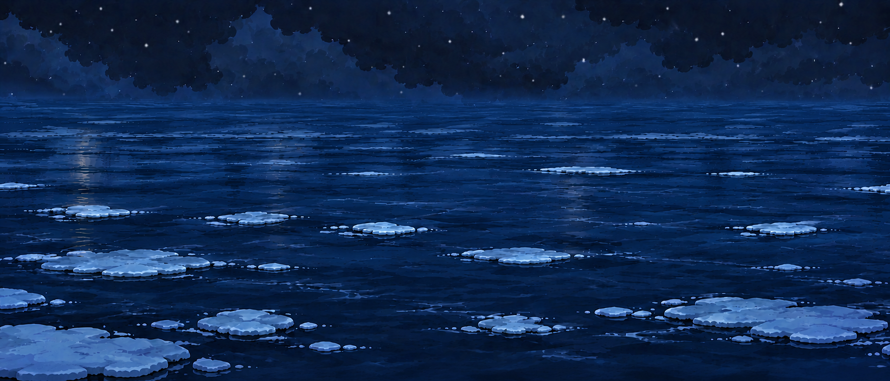
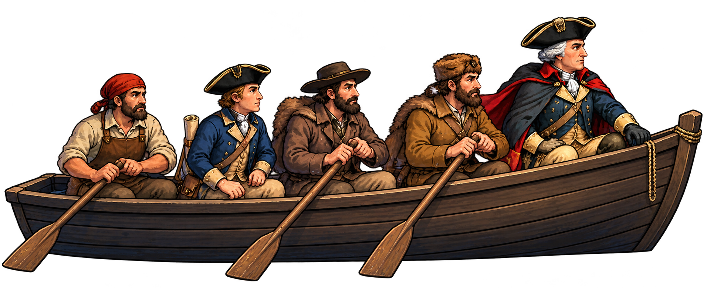
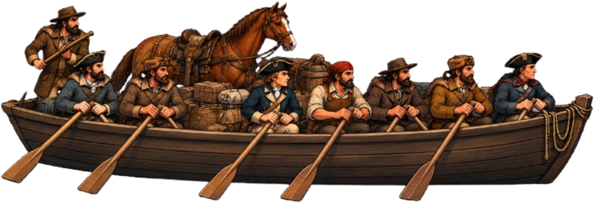
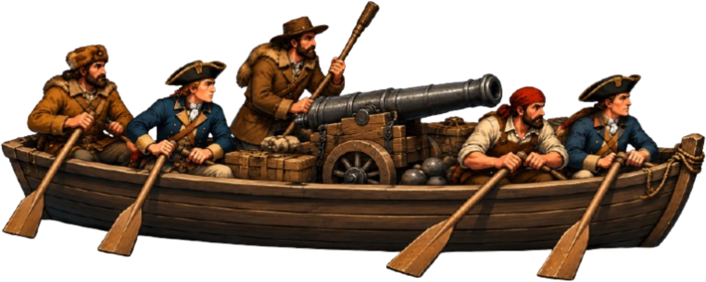
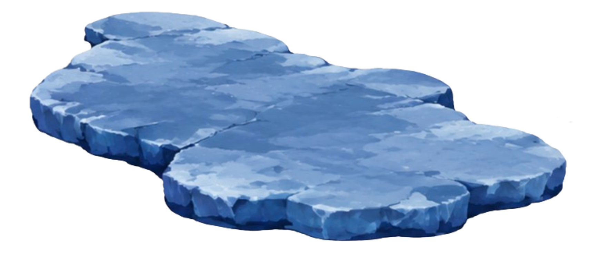
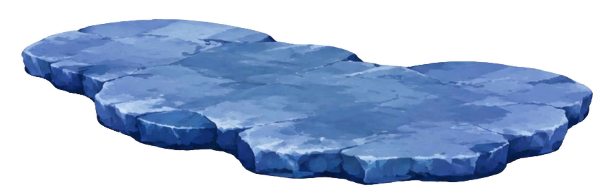
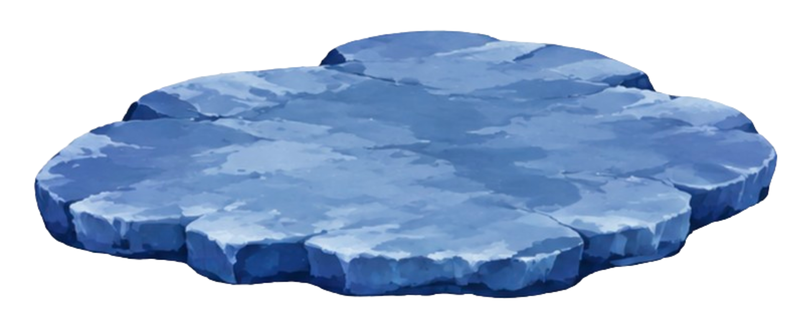
The Continental Army has reached the far shore.
Scene 3 — Ready for the next adventure.
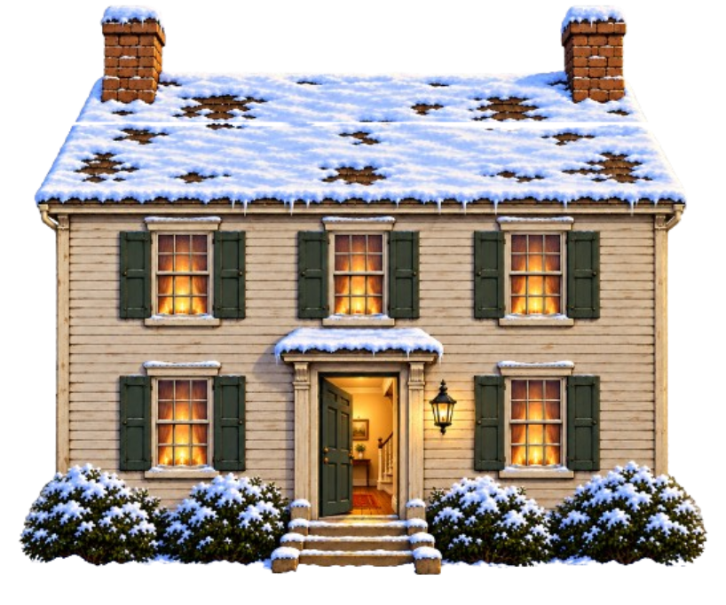
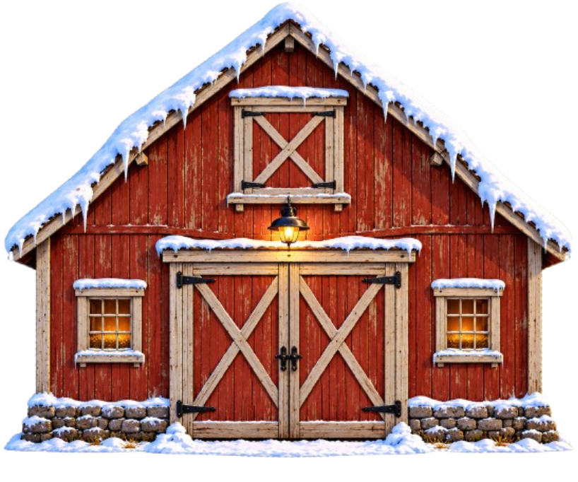
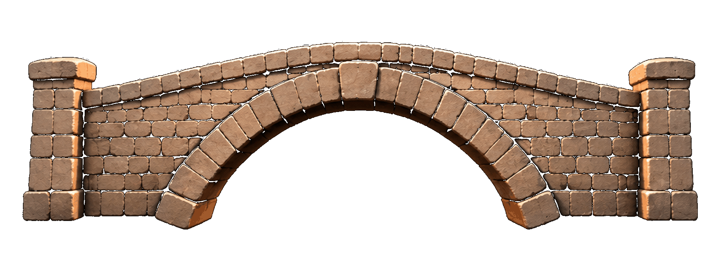
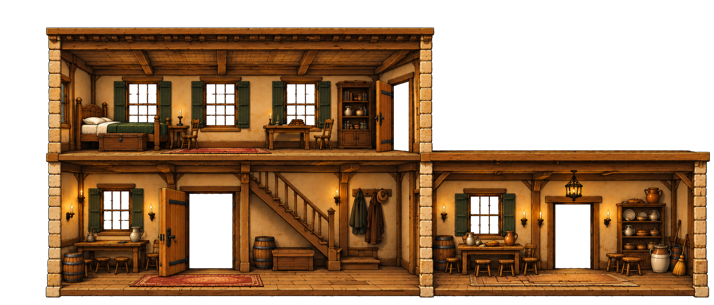
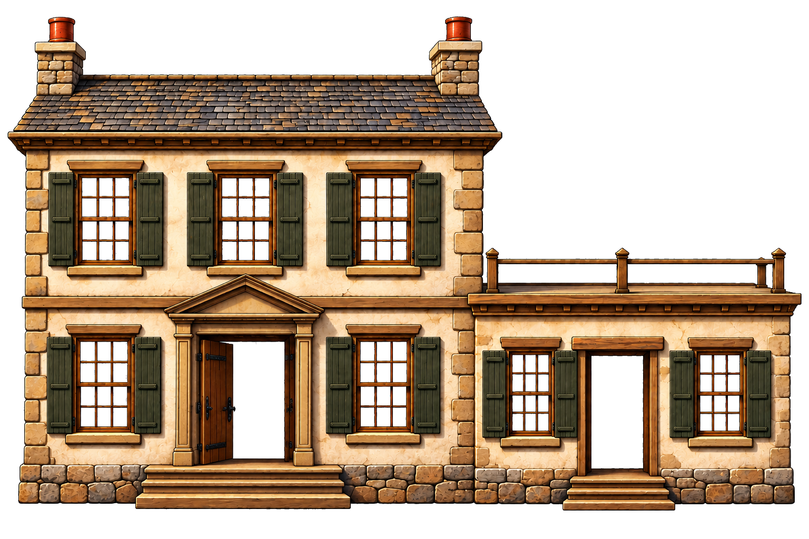
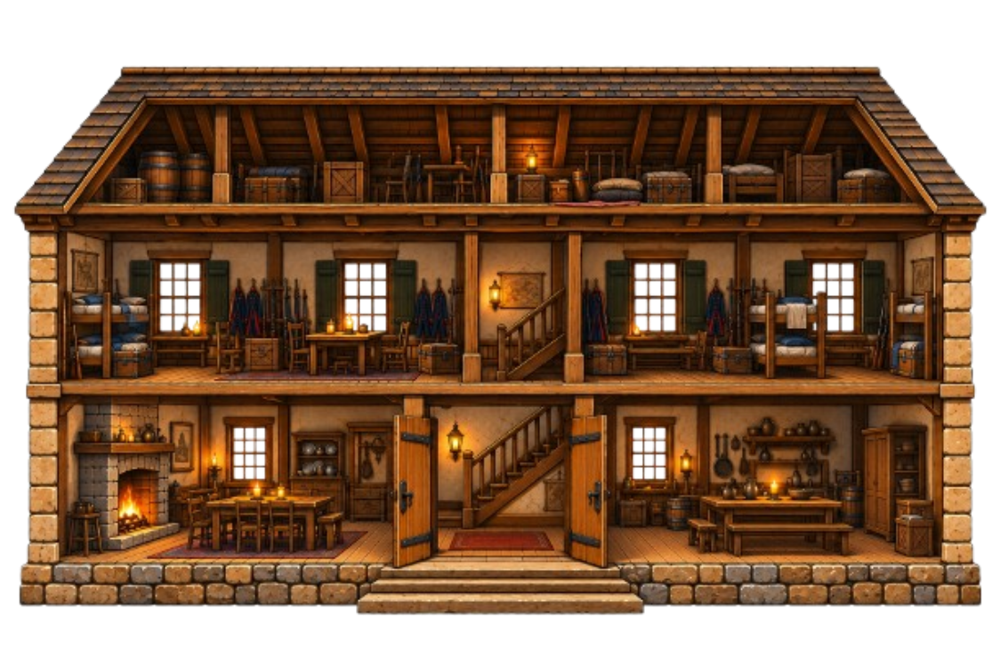
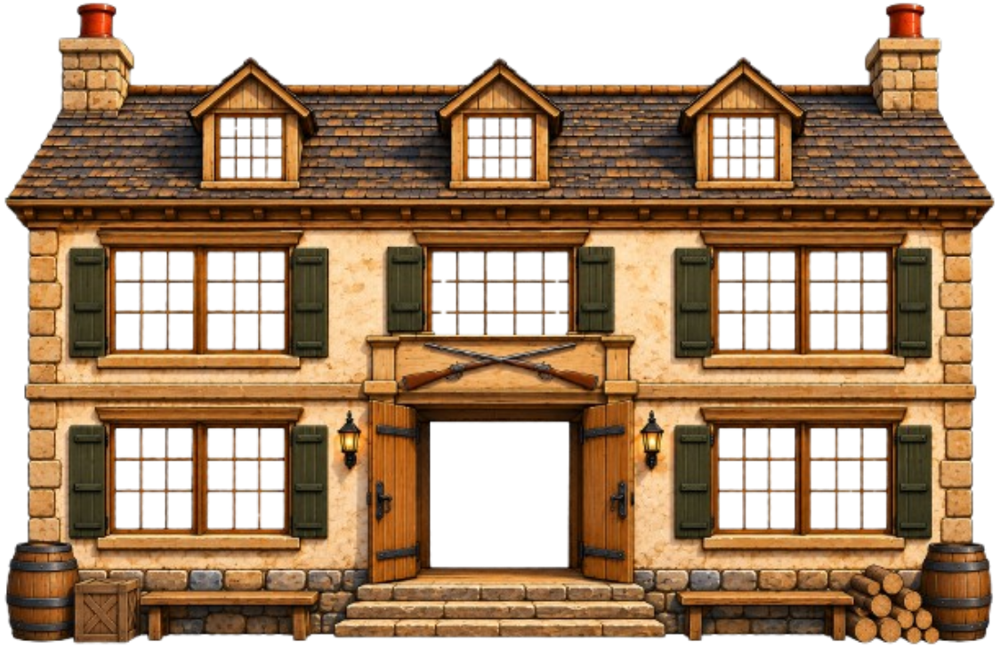
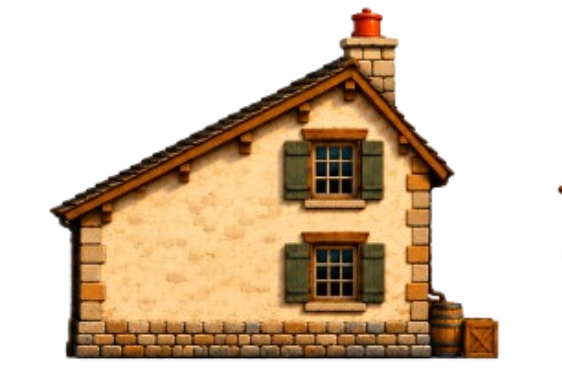
General Washington and the Continental Army have reached the Township of Trenton.
The bridge is behind you. The next mission awaits.
Use ← and → to walk west or east, and ↑ and ↓ to move north or south.
Press C to switch characters, A to perform an available action, and M to toggle music.
Press an arrow key to move one hex. In Scene 2, release the arrow key before pressing it again to move another hex.